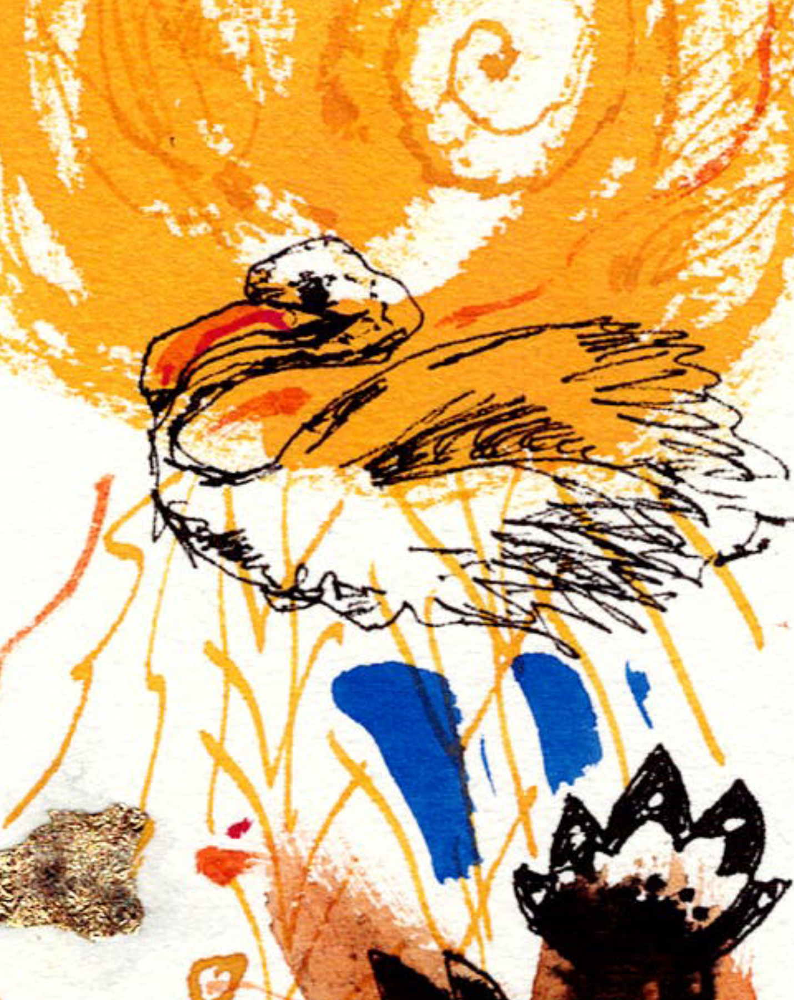
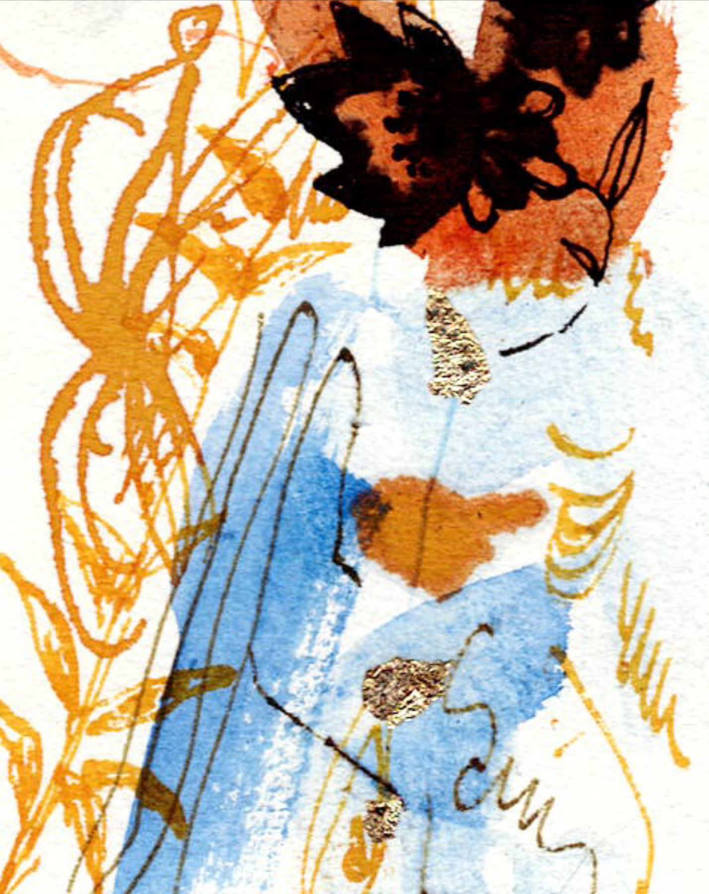

Künstlerischer Ansatz
In meinen Arbeiten gehe ich fast immer von dem aus, was mich unmittelbar umgibt.
Es ist die Faszination der Schöpfung, die ich in die Zweidimensionalität umzusetzen liebe, oder Gegenstände, die mir von Bedeutung sind, oder werden.
Den stillebenhaften Zusammenstellungen geselle ich Farbfelder, Ornamente und oftmals auch Tiere als Botschafter hinzu, die mit den Dingen interagieren, sie interpretieren und in Sinnzusammenhänge stellen.
So kann eine immanente, tiefere Wahrheit hinter der Realität aufleuchten.